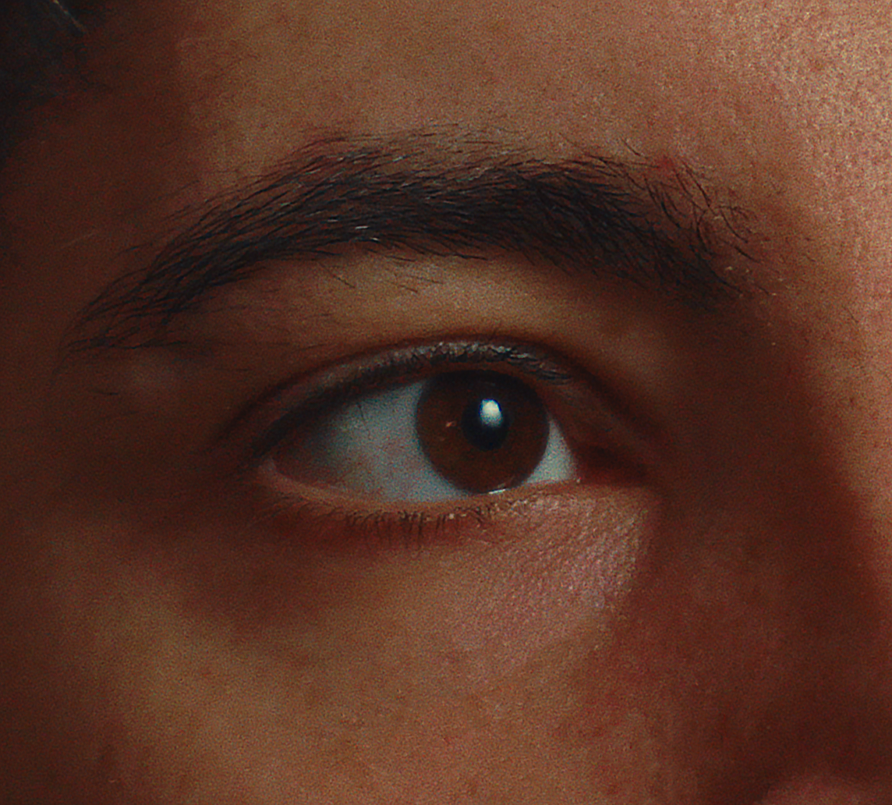

About me

An italian filmmaker from ‘99, shaped by the South — born in Naples, raised under the sun of Lecce, and refined in Bologna.
Started making videos for fun in 2019 and never stopped since then. From scripting, to directing until editing, every creative step is carefully crafted, with an eye for details.
Working between music videos, events, fashion and spots with the goal of creating stunning visuals and building universes where everything can happen.
State-of-the-Art Video Equipment fuels every project. From high-resolution 4K cameras to professional lighting kits, my gear ensures superior image quality and cinematic depth.
- 4K Cinema Cameras
- Professional Studio Lighting
- Stabilizers & Gimbals